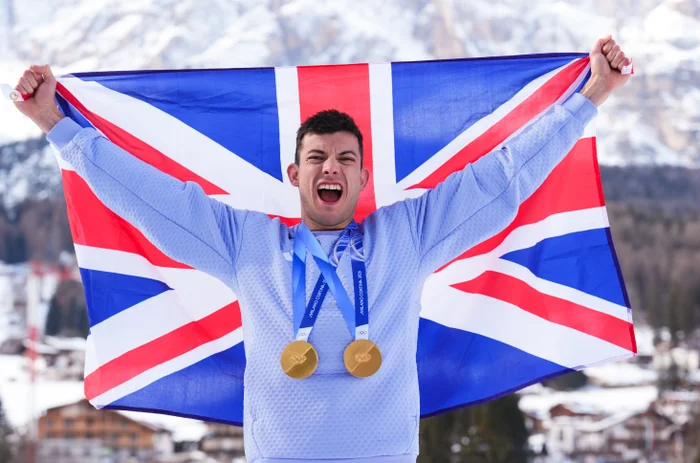

Team GB Celebrate Record Winter Olympics Medal Haul





Britain has wrapped up what officials are calling the country's finest Winter Olympics performance in more than a century of competition, finishing 15th in the overall standings at Milano Cortina with a total of five medals — including a record three gold medals across the Games.
The milestone was sealed when freestyle skier Zoe Atkin claimed bronze in the women's halfpipe on the final Sunday of competition, bringing the overall tally level with Britain's previous best showings at the Sochi and Pyeongchang Games. But it was the sheer number of gold medals that set this campaign apart from anything that had come before it.
Skeleton athlete Matt Weston led the charge, becoming the first British competitor to take two gold medals at a single Winter Olympics. Weston triumphed in the individual skeleton event before teaming up with Tabitha Stoecker to claim gold in the newly introduced mixed skeleton competition, cementing his place in British sporting history. Charlotte Bankes and Huw Nightingale added further gold for the nation in the mixed snowboard cross, while the men's curling team rounded out the medal count with a well-earned silver.
UK Sport performance director Kate Baker said the result represented a watershed moment for winter sport in Britain. "It is by some distance our most successful Games, measured both by the overall number of medals and by the number of athletes who stood on the top step of the podium," she said. "We are genuinely thrilled with everything the team has achieved out here."
Baker also used the occasion to send a clear message to Britain's international rivals. The quality and depth on display throughout the Games, she suggested, was only the beginning. "The Brits are coming," she said, adding that the momentum built in Italy would carry forward not only to the next Winter Games in the French Alps in 2030 but also to the Los Angeles Summer Olympics in the intervening years.
British Olympic Association chef de mission Eve Muirhead was equally enthusiastic in her assessment, calling the Games historic and praising the collective effort of every athlete who represented the nation. Muirhead noted, however, that the medal table alone did not capture the full picture of Britain's achievements. A record 24 athletes finished inside the top ten in their respective disciplines — surpassing the previous best of 18 set at Sochi — underlining how competitive the squad had become across a wide range of events.
Muirhead was keen to highlight the contributions of athletes who narrowly missed out on medals but who nonetheless produced performances of exceptional quality. Cross-country skier Andrew Musgrave, competing at his fifth Winter Olympics, finished in the top ten on three occasions — a remarkable feat for a discipline that rarely generates mainstream attention in Britain. Short-track speed skater Niall Treacy also impressed by reaching the 1500m final, drawing admiration from team management and supporters alike.
"It's those athletes from the less prominent disciplines who often get overlooked in the build-up, but who capture public attention when the Games arrive," Muirhead said. "And I suspect the TV viewing figures for the curling final on Saturday evening tell their own story about how much the nation was watching and caring."
Muirhead reserved particular praise for Weston, who arrived at the Games in impressive form after winning a World Cup event just months earlier — despite suggesting at the time that he was still working back to full fitness. His ability to perform consistently under the intense pressure of Olympic competition, she argued, set him apart from the rest of the field. "Matt has that rare combination of physical brilliance and a mindset that very few athletes in any sport ever develop," she said. "It has been a genuine honour to be part of his Olympic journey, and more than that, he is simply a very good person."
The performance has reignited discussion about UK Sport's funding priorities, with some observers questioning whether greater investment in skating disciplines — which benefit from wider access to training facilities across Britain — might yield further medals in future Games. With more than 50 ice rinks operating across the country, the argument for boosting participation pathways in those events carries weight.
Baker acknowledged the debate but pointed to the increasing accessibility of winter sports more broadly. "Most of our disciplines now have a watch-it-today, try-it-tomorrow quality," she said. "Snow domes, dry slopes and indoor facilities have made it easier for young people to discover these sports and develop real skills. That accessibility is central to how we think about growing our winter programme."
She added that the investment decisions made in recent years had clearly paid dividends, and that UK Sport would continue to evaluate opportunities wherever they existed. "The public have backed this group of athletes, and the athletes have delivered," she said. "Britain has more to come, and we are absolutely not finished yet."
As the closing ceremony brought the Games to a close in Verona, attention began shifting toward the Winter Paralympics, scheduled to begin less than two weeks later. Russian athletes were set to compete under their own national identity for the first time since 2014, a development that Baker said fell under the remit of the British Paralympic Association rather than UK Sport. The BPA, she noted, would be best placed to address questions on that matter directly.
For now, though, the mood within Team GB's camp was one of satisfaction and genuine pride. Five medals. Three golds. A record that has stood for over a century, rewritten in the mountains of northern Italy. Whatever comes next, this generation of British winter athletes has given the sport a foundation to build on for years to come.
Sports